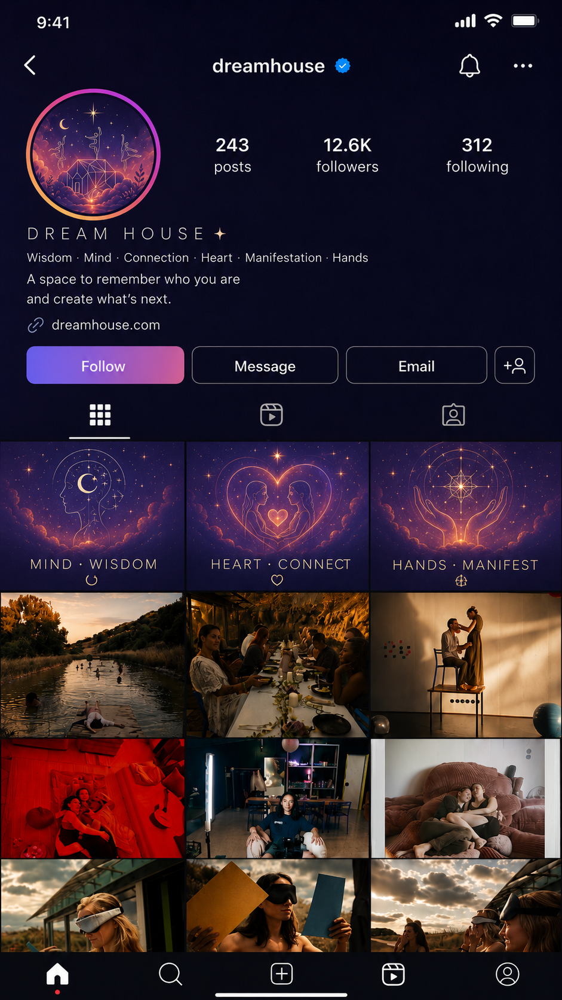

Create curiosity
Do not explain everything at once. Lead with atmosphere, human details, and unanswered questions that make people stop and want to enter the story.
Do not explain everything at once. Lead with atmosphere, human details, and unanswered questions that make people stop and want to enter the story.
Show learning, connection, and creation happening side by side through recurring residents, honest moments, and tangible progress.
Move the audience from “What is Dream House?” to “Fuck yes—I want to be part of it.” The emotional case should arrive before the sales pitch.
Useful information people can carry with them. Dream Talks, 30–90 second podcast clips, workshop highlights, presenter reflections, one-minute takeaways, AI tips, business insights, book recommendations, whiteboard explanations, and “one thing I learned today.”
Candid, felt moments that make the community real. Capture what naturally happens: morning tea, shared meals, beach trips, dancing, cuddles, cooking, games, music-octopus moments, bonfires, group hugs, laughter, and quiet care.
The outcomes and creations emerging from Dream House. Show what residents complete, launch, perform, publish, or bring into reality—apps, websites, AI workflows, businesses, music, films, workshops, and Somatic Attunement.
Publish one piece of information people can learn from, save, share, or apply: a Dream Talk, workshop takeaway, tip, explanation, or reflection.
Publish one unforced human moment—a conversation, shared ritual, laugh, touch, playful exchange, or visual poem that makes the audience feel present.
Show one creation that emerged from Dream House: what was built, completed, launched, performed, published, or made possible through collaboration.
Add one resident interview, one informal update, one cinematic recap, and daily Stories throughout the week.
At the start of each week, define the story, desired outcomes, residents and projects to follow, priority moments, publishing dates, and who owns filming, editing, permissions, and posting.
Review what was captured, what is still missing, which stories need follow-up, what projects progressed, and which emotional thread should continue into the next week.
Invite people inside Dream House to shape how their stories are told: pitch ideas, choose the moments that matter, help film, review edits, approve context, and co-publish when it feels right. The content becomes more honest—and the community becomes part of building the Dream House voice.
Three simple questions can generate material across all three pillars. Keep the exchange conversational, then use the strongest lines as emotional anchors inside Reels, Stories, longer interviews, and the monthly trailer.
Cool tones, clean typography, notebooks, laptops, books, whiteboards, close-ups, slow movement, and calm ambient sound.
The test: will someone learn something clear enough to remember, save, share, or use?
Golden light, handheld movement, laughter, shared meals, ocean, dancing, hugs, natural sound, and organic or upbeat music.
The test: does this feel like a real moment the audience was lucky enough to witness?
Finished work, launches, performances, presentations, creative workspaces, screens, cameras, code, music production, and energetic process-to-result edits.
The test: can the audience see what became real because this person was at Dream House?

This concept translates the strategy into a profile people can understand in seconds—then rewards them with a feed that feels human, cinematic, and alive.
The bio communicates the promise clearly: wisdom, connection, and manifestation in one place—and a direct invitation to imagine what comes next.
Pinned pillar posts make Wisdom, Connect, and Manifest instantly recognizable without turning the profile into a rigid content template.
The grid moves quickly from brand language to lived experience: nature, shared meals, performance, intimacy, experimentation, and resident stories.
The color world, light, and emotional tone connect every post while each collaborator keeps their own face, voice, project, and perspective.
Mario will shape the month as one continuous narrative. Each post should advance the audience through the same emotional arc, while still working as a meaningful standalone story.
Tease the atmosphere before explaining the concept.
Introduce the residents, their dreams, and why they came.
Show rituals forming and strangers becoming community.
Follow ideas becoming collaborations, experiments, and work.
Reveal personal, relational, and creative change.
Show what launches, continues, and travels beyond the house.
Success means the audience does more than understand the concept. They follow the residents’ journey, recognize the transformation, and see Dream House as a credible prototype for how life could be lived.